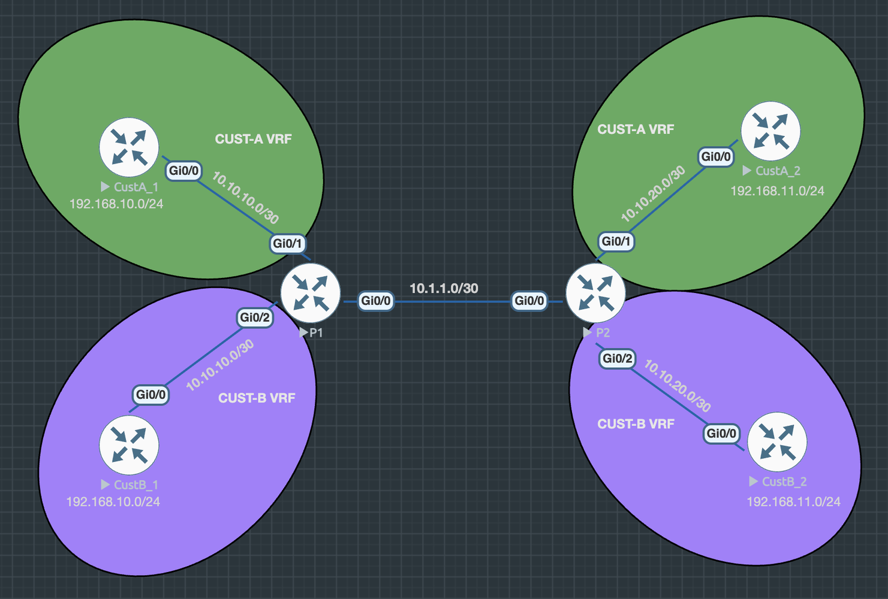
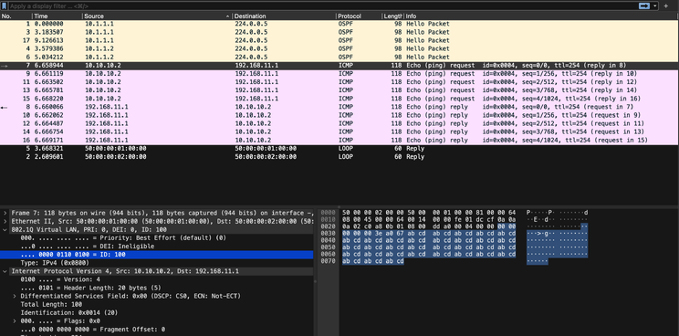

Routing with VRF-Lite
In a world where multi-tenancy is standard and overlapping IP addressing is a common reality, Virtual Routing and Forwarding Lite (VRF-Lite) emerges as a clean and powerful solution. Whether you’re an enterprise splitting departments or a service provider managing distinct customers, VRF-Lite can streamline your architecture—without extra hardware overhead.
Link to heading
Today, I’m showcasing a lab I designed that demonstrates how VRF-Lite achieves traffic isolation and address overlap in a Tiered ISP environment. This topology simulates two different customers using the same IP space, and yet, thanks to VRF-Lite, they remain entirely segregated.
Link to heading
What is VRF-Lite? Link to heading
VRF-Lite allows a single physical router to support multiple, isolated routing tables. Think of it like creating mini-routers inside one chassis—each with its own interfaces, routing protocols, and forwarding decisions.
Core Benefits: Link to heading
- Traffic Separation: Prevents cross-talk between customers.
- Address Overlap: Enables duplicate IP ranges across VRFs.
- Efficiency: Removes the need for dedicated routers per tenant.
Lab Topology Overview Link to heading

The diagram illustrates a provider edge (P1) router connected to two customer sites: CustA_1 and CustB_1, both using identical addressing schemes but operating in complete isolation via VRFs.
Color Code: Link to heading
- 🟢 CUST-A (Green VRF)
- 🟣 CUST-B (Purple VRF)
Key Interconnects: Link to heading
- Gig0/0.1 (dot1Q 100) → VRF CUST-A
- Gig0/0.2 (dot1Q 200) → VRF CUST-B
- Gig0/1 → Link to CustA_1
- Gig0/2 → Link to CustB_1
Both customers have routers using the same loopback subnet 192.168.10.0/24, showcasing that overlapping IPs are fully viable with VRF-Lite.
Under the Hood: Key Configuration Highlights Link to heading
VRF Definition on P1 Link to heading
ip vrf CUST-A
ip vrf CUST-B
Subinterfaces with Encapsulation & Routing Link to heading
interface Gig0/0.1
encapsulation dot1Q 100
ip vrf forwarding CUST-A
ip address 10.1.1.1 255.255.255.252
ip ospf 1 area 0
interface Gig0/0.2
encapsulation dot1Q 200
ip vrf forwarding CUST-B
ip address 10.1.1.1 255.255.255.252
ip ospf 2 area 0
VRF-Scoped OSPF Link to heading
router ospf 1 vrf CUST-A
router ospf 2 vrf CUST-B
With VRF-bound OSPF processes, each customer operates in their own logical routing domain—even running the same protocols without collision.
Real-World Implications Link to heading
Using this technique, providers can easily deliver Layer 3 services to multiple customers with absolute isolation. Imagine an IXP or Tier 2 ISP who connects dozens of enterprises—each running the same 192.168.X.X ranges internally. VRF-Lite is your safety net.
Validation and Output Link to heading
Wireshark Snapshot: Ping from CustA_1 Loopback to CustA_2g from CustA_1 Loopback to CustA_2 Link to heading

You see the traffic is isolated within VLAN 100 on the link between P1 and P2
Ping Output (CustA_1 → CustA_2)
CustA_1#ping 192.168.11.1 repeat 5
Type escape sequence to abort.
Sending 5, 100-byte ICMP Echos to 192.168.11.1, timeout is 2 seconds:
!!!!!
Success rate is 100 percent (5/5), round-trip min/avg/max = 2/2/2 ms
Traceroute Snapshot (CustA_1 → CustA_2)
CustA_1#traceroute 192.168.11.1
Type escape sequence to abort.
Tracing the route to 192.168.11.1
VRF info: (vrf in name/id, vrf out name/id)
1 10.10.10.1 1 msec 2 msec 1 msec
2 10.1.1.2 2 msec 2 msec 2 msec
3 10.10.20.2 3 msec 3 msec *
Below showing the independent routing tables for CUST-A and CUST-B. Despite using overlapping address spaces, the P1 router handles each customer’s routes within their dedicated VRFs—ensuring no crossover or leakage.
Default Routing Table (Global)
P1#show ip route
Empty
VRF-Specific Routing Table: CUST-A
P1#show ip route vrf CUST-A
Routing Table: CUST-A
<...routing codes...>
10.1.1.0/30 → Connected via Gi0/0.1
192.168.10.1/32 → Learned via OSPF from CustA_1
192.168.11.1/32 → Learned from remote CustA site
VRF-Specific Routing Table: CUST-B
P1#show ip route vrf CUST-B
Routing Table: CUST-B
<...routing codes...>
10.1.1.0/30 → Connected via Gi0/0.2
192.168.10.1/32 → Learned via OSPF from CustB_1
192.168.11.1/32 → Learned from remote CustB site
Conclusion: the output confirms that traffic for each customer is strictly confined to their respective VRF routing tables, even though they both use the 192.168.10.0/32 and 192.168.11.0/32 spaces. Nice 😊
Final Thoughts Link to heading
VRF-Lite may be “lite” in name, but its impact on routing architectures is anything but. If you’re working on lab environments in EVE-NG or simulating a multi-customer ISP scenario, this is a vital tool in your kit. And best of all—it’s scalable, elegant, and battle-tested.
Wishing you a great week—keep learning, keep engineering, and stay curious.stay curious.